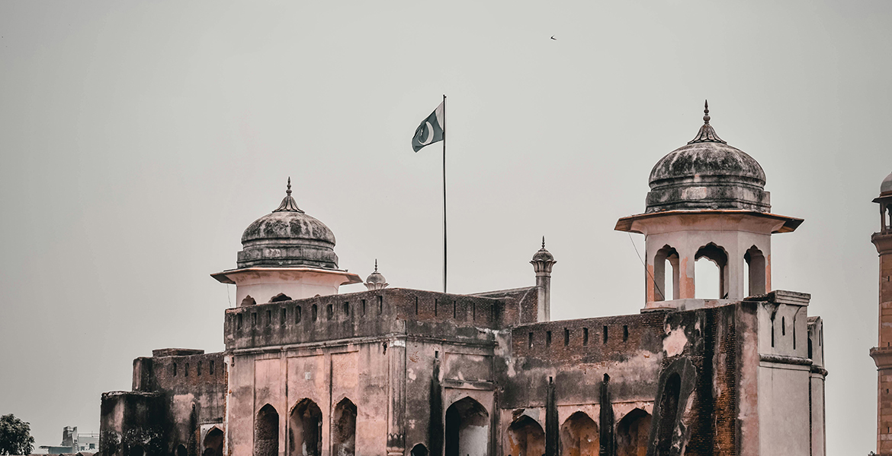
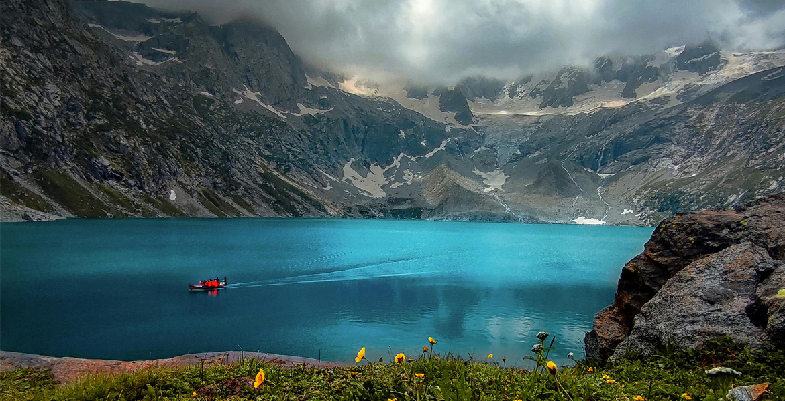
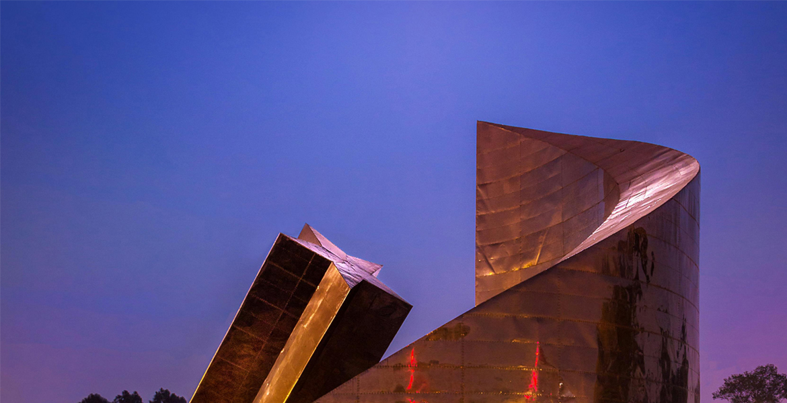
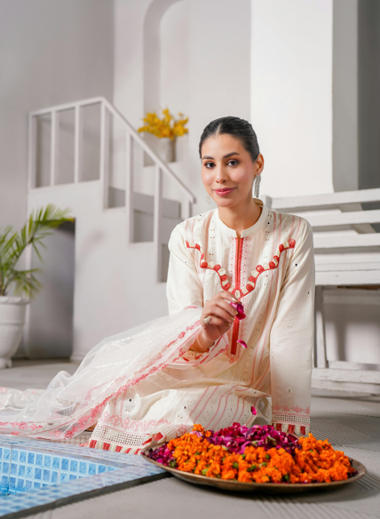

Islamabad
1,301,130 Resident
Pakistan
33° 44' 16.9620'' N and 73° 5' 4.1568'' E




Get More Information

Islamabad
View all citiesIslamabad is the capital of Pakistan, located within the Islamabad Capital Territory. With a population of two million, it is the tenth-largest city in Pakistan, while the Islamabad-Rawalpindi metropolitan area is the third-largest in Pakistan, with a population exceeding five million.
Images Credit
Bandung
Asia Africa
City Network
Quick Link
Get in touch
Need Information?
+62 81318667479
bapperida@bandung.go.id
© BAACN - All rights reserved